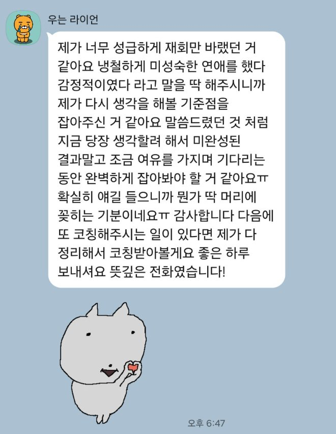
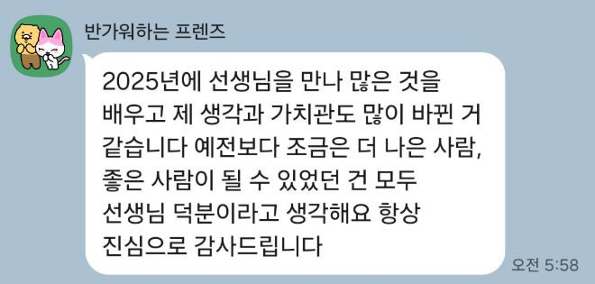
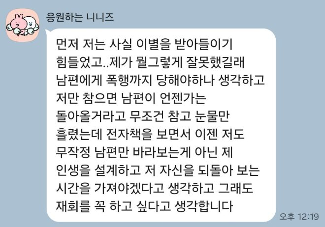
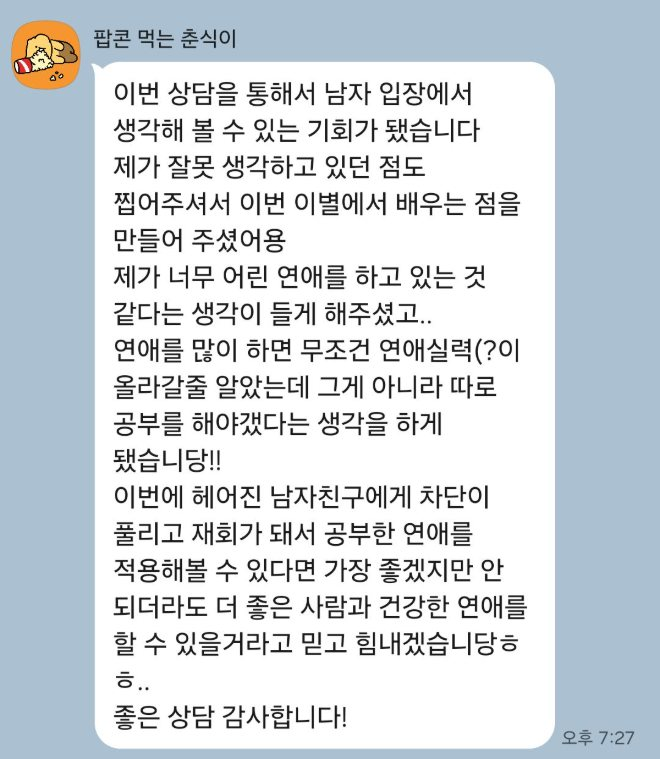
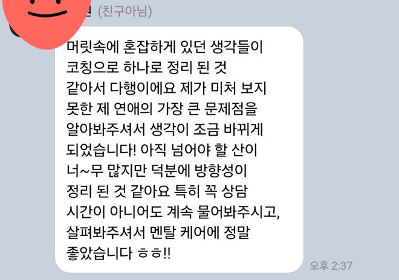
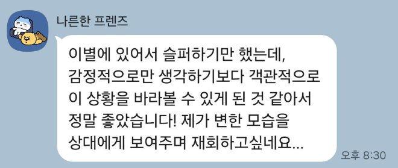
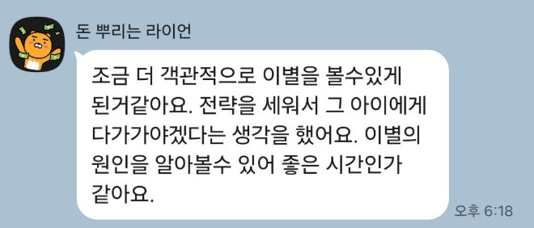
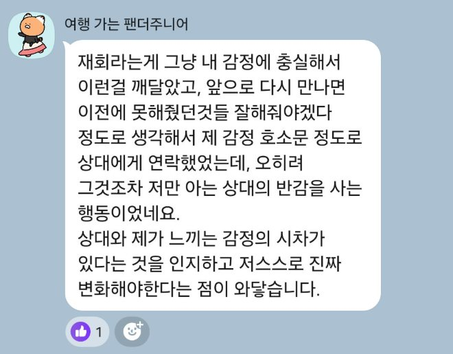

장문의 진심 메시지
길게 마음을 적어 보내도, 이별의 본질이 아닌 곳에 초점이 맞춰져 마음이 움직이지 않습니다.
EMPATHY
아무리 잡아봐도 안 잡혔다면, 이별의 본질을 몰랐던 겁니다.
잘못된 방향으로 그 사람에게 향했던 거예요.
WHY
그리고 셋 다, 이별의 본질을 비껴갑니다.
길게 마음을 적어 보내도, 이별의 본질이 아닌 곳에 초점이 맞춰져 마음이 움직이지 않습니다.
마음의 거리는 발걸음으로 좁혀지지 않습니다. 오히려 부담만 키웁니다.
재회는 판단의 문제입니다. 다짐만으로는 “앞으로 좋겠다”는 판단을 만들지 못합니다.
STORY
저는 감정 표현에 서툰 사람이었어요. 그런데 연애를 하면서 알았습니다. 서운하면 서운하다 말해야 하고, 다툼은 화가 아니라 대화로 풀어야 한다는 걸요. 그래서 저는 믿었습니다. 사랑은 배우는 게 아니라, 그냥 많이 해보면 되는 거라고.
그 생각이 깨진 건 무료 코칭을 시작하면서였습니다. 감정을 쏟아내고도 이해받길 바라는 분, 불안을 집착으로 쏟아내는 분을 만났습니다. 그분들에겐 공통점이 있었어요. 자기 연애 패턴도, 감정 표현법도, 다툼을 푸는 대화법도, 불안의 원인도 몰랐습니다. 무엇보다 자기만의 기준이 없었습니다.
그런데 다들 똑같이 물었습니다. “연락은 언제 해요? 무슨 메시지를 보내요?”
저는 이렇게 답했습니다. 이별의 본질을 해결하지 못한 채 보내는 연락은, 가진 것 하나 없이 “앞으로 집도 사고 차도 살 테니 결혼하자”고 말하는 것과 같다고요. 그런 사람에게 누가 자기 인생을 맡기겠습니까.
매달려서 잠깐 재회한 분들도 있었습니다. 하지만 한 달을 넘기는 경우를 본 적이 없습니다. 마음을 얻는 데만 매달렸기 때문입니다.
그때 깨달았습니다. 이별은 마음이 식어서가 아니라, “이 사람과의 미래가 좋지 않겠다”는 판단 때문에 일어난다는 걸요.
매달릴수록 멀어지고 결국 차단당하는 이유가 거기 있었습니다. 사실 제 이야기이기도 합니다. 저도 잠수이별과 환승이별을 겪고 2년을 매달렸습니다. 그때는 모든 게 제 잘못 같았어요. 하지만 이제는 압니다. 저는 마음이 식은 게 아니라, 판단당한 거였습니다. 그리고 저는 그 판단을 바꾸는 법을 몰랐을 뿐입니다.
그래서 저는 이 일을 합니다. 연락 기술이 아니라, 이별의 본질을 다룹니다. 당신의 연애를 함께 돌아보고, 무엇을 바꿔야 하는지 알려드립니다.
자책하지 마세요. 연애는 둘이 하는 겁니다. 당신은 분명 최선을 다했어요. 그게 당신의 최선이었고, 단지 몰랐을 뿐입니다. 이제 배워가면 됩니다.
재회는 매달림이 아닙니다.
HOW
혼자 헤매지 않게, 매일 옆에서 방향을 잡아드립니다.
현재 상황을 진단하고, 무엇이 문제인지 함께 정리합니다.
이별의 본질이 된 부분을 개인별 맞춤으로 수업합니다. ‘시간을 갖자’는 연인과의 대화법, 건강하게 서운함을 표현하는 법 등 당신에게 필요한 것을 다룹니다.
주 3회 + 긴급 피드백 주 1회. 실전 대화를 그때그때 코칭합니다.
15분 × 2회. 결정적 순간을 함께 설계합니다.
끝까지 동행하며, 다시 사랑받는 사람으로 성장하게 돕습니다.
COACHING
처음이라면, 가장 많은 분이 선택하는 1개월 밀착 코칭을 추천합니다.
10만원
40만원
130만원
어떤 게 맞을지 모르겠다면? → 💬 무료 상담으로 편하게 물어보세요. (카드/계좌이체 결제 가능)
CHANGE
REVIEW








ABOUT 범쌤
당신은 사랑에 서툴렀던 게 아니라, 아무도 알려주지 않았을 뿐입니다. 마음을 얻으려 애쓰는 대신, 판단을 바꾸는 법을 알려드립니다. 3년간 누적 3,000건의 상담으로 증명한 본질 중심 코칭.
FAQ
네. 차단·연락두절 상태에서 시작하는 분이 가장 많습니다. 지금 상황에 맞는 단계부터 함께 설계하니 걱정 마세요.
매달림은 ‘판단’을 바꾸지 못했을 뿐, 끝이 아닙니다. 지금부터 본질을 바로잡으면 충분히 다시 시작할 수 있습니다.
‘언제·무슨 메시지’보다 중요한 건 그 전에 이별의 본질을 해결하는 것입니다. 코칭에서 당신 상황에 맞는 타이밍과 방법을 함께 정합니다.
그게 정상입니다. 무료 상담으로 현재 상황을 먼저 진단하고, 무엇부터 바꿔야 할지 명확하게 정리해 드립니다.
신호일 수 있지만, 그 자체로 결론짓긴 이릅니다. 행동의 ‘맥락’을 함께 해석하고 다음 수를 설계합니다.
네, 100% 온라인입니다. 전화 코칭이 기본이며, 전화가 어려우면 카카오톡으로 진행합니다.
카드·계좌이체 모두 가능합니다. 신청 후 24시간 안에 안내드리며, 운영 시간은 오전 10시~밤 10시입니다.
무료 상담은 노쇼 방지를 위한 소정의 예약금이 있으며, 상담 진행 시 처리됩니다. 예약 1시간 이내 취소는 어려우며, 노쇼 시 예약금은 차감됩니다.
지금이 골든타임입니다
완벽하지 않아도 괜찮아요. 일단 무료 상담으로 현재 상황만 점검해보세요.
자책은 그만, 이제 배워가면 됩니다.